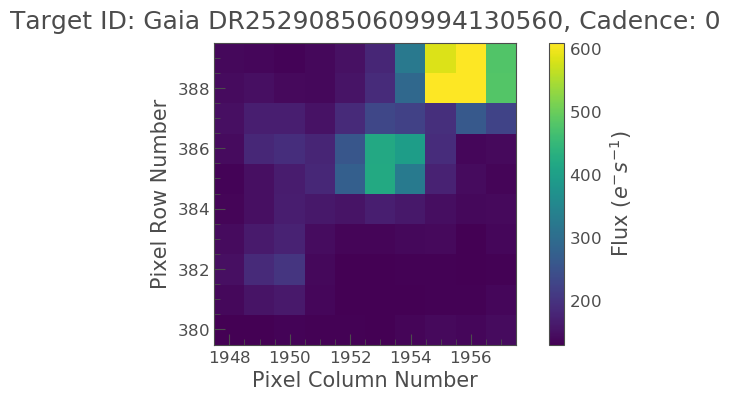

Understanding Full Frame Images
Learning goals
In this tutorial we will learn the following, - What a TESS Full Frame Image (FFI) is. - How to obtain an FFI from the MAST archive via Lightkurve. - How to cut out data around an object of interest in an FFI. - How to plot the cut FFI data. - How to access the metadata, and understand the files properties and units.
We will also show the user where they can find more details about TESS FFIs.
What is a Full Frame Image?
The TESS telescope observes stars for long periods of time, just under a month per sector. Each sector is covered by 4 cameras.
A single FFI is the full set of all science and collateral pixels across all CCDs of a given camera. FFIs were taken every 30 minutes during science operations in the primary mission, and every 10 min in the extended.
FFI data is provided in three types: uncalibrated, calibrated, and uncertainty.
Uncalibrated FFI data is provided in one file with two Header/Data Units (HDUs): a primary header and the CCD image header and data.
The calibrated image and its uncertainty are provided in a separate file with several HDUs: a primary header, the CCD calibrated image header and data, the CCD uncertainty image header and data, and the cosmic ray corrections binary table header and data.
Cosmic Ray Mitigated (CRM) FFIs are the same as FFIs except they will are collected with the on-board cosmic ray mitigation enabled.
Sometimes an object of interest isn’t in a TPF (see the TPF tutorial) but is in an FFI and as such the user may wish to create a cut out of the object in this FFI and work with this object only.
In this tutorial we’ll cover the basics of working with FFIs.
Imports
This tutorial requires that you import Lightkurve only.
%matplotlib inline import lightkurve as lk
Defining terms
- Target Pixel File (TPF): A file containing the original CCD pixel observations from which light curves are extracted.
- Full Frame Image (FFI): A file containing the full set of all science and collateral pixels across all CCDs of a given camera.
- Cadence: The rate at which TESS photometric observations are stored.
- Sector: One of TESS’s 27 (to date) observing periods, approximately ~27 days in duration.
Downloading data
The TESS FFIs are stored on the Mikulksi Archive for Space Telescopes (MAST) archive.
First, let’s create a TPF for an object of interest, let’s choose Gaia object DR25290850609994130560. This object was observed in the TESS FFI data only. We’ll use the search_tesscut function to download a cut out of the target in a chosen sector. You can determine which sectors the target was observed in using the MAST TESS portal.
search_result = lk.search_tesscut('Gaia DR25290850609994130560') print(search_result)
SearchResult containing 5 data products. # observation author target_name productFilename distance --- -------------- ------ --------------------------- --------------- -------- 0 TESS Sector 4 MAST Gaia DR25290850609994130560 TESSCut 0.0 1 TESS Sector 7 MAST Gaia DR25290850609994130560 TESSCut 0.0 2 TESS Sector 8 MAST Gaia DR25290850609994130560 TESSCut 0.0 3 TESS Sector 9 MAST Gaia DR25290850609994130560 TESSCut 0.0 4 TESS Sector 10 MAST Gaia DR25290850609994130560 TESSCut 0.0
We can see that this object is detected in Sectors 4, 7, 8, 9, and 10. You can download data from just one sector and specify the cutout_size in number of TESS pixels on a side as an argument to .download(). The default is a meager 5 × 5 square. Let’s go with 10 pixels square.
search_result_s4 = lk.search_tesscut('Gaia DR25290850609994130560', sector=4) tpfs_s4 = search_result_s4.download(cutout_size=10) print(tpfs_s4)
TessTargetPixelFile(TICID: Gaia DR25290850609994130560)
The above code has created a variable named tpfs_s4 which is a Python object of type TessTargetPixelFile This can then be treated and examined the same way as in the previous Target Pixel File tutorial, for example lets plot the object.
%matplotlib inline tpfs_s4.plot();
Great we now see our object of interest and the surrounding region. As indicated in the previous Target Pixel File tutorial, we can examine the header of this file via,
tpfs_s4.hdu[1].header
XTENSION= 'BINTABLE' / binary table extension BITPIX = 8 / array data type NAXIS = 2 / number of array dimensions NAXIS1 = 2066 / length of dimension 1 NAXIS2 = 1060 / length of dimension 2 PCOUNT = 0 / number of group parameters GCOUNT = 1 / number of groups TFIELDS = 12 / number of table fields TTYPE1 = 'TIME ' / column name TFORM1 = 'D ' / column format TUNIT1 = 'BJD - 2457000, days' / unit TDISP1 = 'D14.7 ' / display format TTYPE2 = 'TIMECORR' / column name TFORM2 = 'E ' / column format TUNIT2 = 'd ' / unit TDISP2 = 'E14.7 ' / display format TTYPE3 = 'CADENCENO' / column name TFORM3 = 'J ' / column format TDISP3 = 'I10 ' / display format TTYPE4 = 'RAW_CNTS' / column name TFORM4 = '100J ' / column format TUNIT4 = 'count ' / unit TNULL4 = -1 / null value TDISP4 = 'I8 ' / display format TDIM4 = '(10, 10)' / multi-dimensional array spec WCAX4 = 2 / number of WCS axes 1CTYP4 = 'RA---TAN' / right ascension coordinate type 2CTYP4 = 'DEC--TAN' / declination coordinate type 1CRPX4 = 5.4970243878873 / [pixel] reference pixel along image axis 1 2CRPX4 = 5.5084913439498 / [pixel] reference pixel along image axis 2 1CRVL4 = 120.49774824319 / [deg] right ascension at reference pixel 2CRVL4 = -60.35838348711 / [deg] declination at reference pixel 1CUNI4 = 'deg ' / physical unit in column dimension 2CUNI4 = 'deg ' / physical unit in row dimension 1CDLT4 = 1.0 / [deg] pixel scale in RA dimension 2CDLT4 = 1.0 / [deg] pixel scale in DEC dimension 11PC4 = 0.00082008272000062 / Coordinate transformation matrix element 12PC4 = -0.0052652158454813 / Coordinate transformation matrix element 21PC4 = 0.0052951771787336 / Coordinate transformation matrix element 22PC4 = 0.0012306942427273 / Coordinate transformation matrix element WCSN4P = 'PHYSICAL' / table column WCS name WCAX4P = 2 / table column physical WCS dimensions 1CTY4P = 'RAWX ' / table column physical WCS axis 1 type, CCD col 2CTY4P = 'RAWY ' / table column physical WCS axis 2 type, CCD row 1CUN4P = 'PIXEL ' / table column physical WCS axis 1 unit 2CUN4P = 'PIXEL ' / table column physical WCS axis 2 unit 1CRV4P = 1948 / table column physical WCS ax 1 ref value 2CRV4P = 380 / table column physical WCS ax 2 ref value 1CDL4P = 1.0 / table column physical WCS a1 step 2CDL4P = 1.0 / table column physical WCS a2 step 1CRP4P = 1 / table column physical WCS a1 reference 2CRP4P = 1 / table column physical WCS a2 reference TTYPE5 = 'FLUX ' / column name TFORM5 = '100E ' / column format TUNIT5 = 'e-/s ' / unit TDISP5 = 'E14.7 ' / display format TDIM5 = '(10, 10)' / multi-dimensional array spec WCAX5 = 2 / number of WCS axes 1CTYP5 = 'RA---TAN' / right ascension coordinate type 2CTYP5 = 'DEC--TAN' / declination coordinate type 1CRPX5 = 5.4970243878873 / [pixel] reference pixel along image axis 1 2CRPX5 = 5.5084913439498 / [pixel] reference pixel along image axis 2 1CRVL5 = 120.49774824319 / [deg] right ascension at reference pixel 2CRVL5 = -60.35838348711 / [deg] declination at reference pixel 1CUNI5 = 'deg ' / physical unit in column dimension 2CUNI5 = 'deg ' / physical unit in row dimension 1CDLT5 = 1.0 / [deg] pixel scale in RA dimension 2CDLT5 = 1.0 / [deg] pixel scale in DEC dimension 11PC5 = 0.00082008272000062 / Coordinate transformation matrix element 12PC5 = -0.0052652158454813 / Coordinate transformation matrix element 21PC5 = 0.0052951771787336 / Coordinate transformation matrix element 22PC5 = 0.0012306942427273 / Coordinate transformation matrix element WCSN5P = 'PHYSICAL' / table column WCS name WCAX5P = 2 / table column physical WCS dimensions 1CTY5P = 'RAWX ' / table column physical WCS axis 1 type, CCD col 2CTY5P = 'RAWY ' / table column physical WCS axis 2 type, CCD row 1CUN5P = 'PIXEL ' / table column physical WCS axis 1 unit 2CUN5P = 'PIXEL ' / table column physical WCS axis 2 unit 1CRV5P = 1948 / table column physical WCS ax 1 ref value 2CRV5P = 380 / table column physical WCS ax 2 ref value 1CDL5P = 1.0 / table column physical WCS a1 step 2CDL5P = 1.0 / table column physical WCS a2 step 1CRP5P = 1 / table column physical WCS a1 reference 2CRP5P = 1 / table column physical WCS a2 reference TTYPE6 = 'FLUX_ERR' / column name TFORM6 = '100E ' / column format TUNIT6 = 'e-/s ' / unit TDISP6 = 'E14.7 ' / display format TDIM6 = '(10, 10)' / multi-dimensional array spec WCAX6 = 2 / number of WCS axes 1CTYP6 = 'RA---TAN' / right ascension coordinate type 2CTYP6 = 'DEC--TAN' / declination coordinate type 1CRPX6 = 5.4970243878873 / [pixel] reference pixel along image axis 1 2CRPX6 = 5.5084913439498 / [pixel] reference pixel along image axis 2 1CRVL6 = 120.49774824319 / [deg] right ascension at reference pixel 2CRVL6 = -60.35838348711 / [deg] declination at reference pixel 1CUNI6 = 'deg ' / physical unit in column dimension 2CUNI6 = 'deg ' / physical unit in row dimension 1CDLT6 = 1.0 / [deg] pixel scale in RA dimension 2CDLT6 = 1.0 / [deg] pixel scale in DEC dimension 11PC6 = 0.00082008272000062 / Coordinate transformation matrix element 12PC6 = -0.0052652158454813 / Coordinate transformation matrix element 21PC6 = 0.0052951771787336 / Coordinate transformation matrix element 22PC6 = 0.0012306942427273 / Coordinate transformation matrix element WCSN6P = 'PHYSICAL' / table column WCS name WCAX6P = 2 / table column physical WCS dimensions 1CTY6P = 'RAWX ' / table column physical WCS axis 1 type, CCD col 2CTY6P = 'RAWY ' / table column physical WCS axis 2 type, CCD row 1CUN6P = 'PIXEL ' / table column physical WCS axis 1 unit 2CUN6P = 'PIXEL ' / table column physical WCS axis 2 unit 1CRV6P = 1948 / table column physical WCS ax 1 ref value 2CRV6P = 380 / table column physical WCS ax 2 ref value 1CDL6P = 1.0 / table column physical WCS a1 step 2CDL6P = 1.0 / table column physical WCS a2 step 1CRP6P = 1 / table column physical WCS a1 reference 2CRP6P = 1 / table column physical WCS a2 reference TTYPE7 = 'FLUX_BKG' / column name TFORM7 = '100E ' / column format TUNIT7 = 'e-/s ' / unit TDISP7 = 'E14.7 ' / display format TDIM7 = '(10, 10)' / multi-dimensional array spec WCAX7 = 2 / number of WCS axes 1CTYP7 = 'RA---TAN' / right ascension coordinate type 2CTYP7 = 'DEC--TAN' / declination coordinate type 1CRPX7 = 5.4970243878873 / [pixel] reference pixel along image axis 1 2CRPX7 = 5.5084913439498 / [pixel] reference pixel along image axis 2 1CRVL7 = 120.49774824319 / [deg] right ascension at reference pixel 2CRVL7 = -60.35838348711 / [deg] declination at reference pixel 1CUNI7 = 'deg ' / physical unit in column dimension 2CUNI7 = 'deg ' / physical unit in row dimension 1CDLT7 = 1.0 / [deg] pixel scale in RA dimension 2CDLT7 = 1.0 / [deg] pixel scale in DEC dimension 11PC7 = 0.00082008272000062 / Coordinate transformation matrix element 12PC7 = -0.0052652158454813 / Coordinate transformation matrix element 21PC7 = 0.0052951771787336 / Coordinate transformation matrix element 22PC7 = 0.0012306942427273 / Coordinate transformation matrix element WCSN7P = 'PHYSICAL' / table column WCS name WCAX7P = 2 / table column physical WCS dimensions 1CTY7P = 'RAWX ' / table column physical WCS axis 1 type, CCD col 2CTY7P = 'RAWY ' / table column physical WCS axis 2 type, CCD row 1CUN7P = 'PIXEL ' / table column physical WCS axis 1 unit 2CUN7P = 'PIXEL ' / table column physical WCS axis 2 unit 1CRV7P = 1948 / table column physical WCS ax 1 ref value 2CRV7P = 380 / table column physical WCS ax 2 ref value 1CDL7P = 1.0 / table column physical WCS a1 step 2CDL7P = 1.0 / table column physical WCS a2 step 1CRP7P = 1 / table column physical WCS a1 reference 2CRP7P = 1 / table column physical WCS a2 reference TTYPE8 = 'FLUX_BKG_ERR' / column name TFORM8 = '100E ' / column format TUNIT8 = 'e-/s ' / unit TDISP8 = 'E14.7 ' / display format TDIM8 = '(10, 10)' / multi-dimensional array spec WCAX8 = 2 / number of WCS axes 1CTYP8 = 'RA---TAN' / right ascension coordinate type 2CTYP8 = 'DEC--TAN' / declination coordinate type 1CRPX8 = 5.4970243878873 / [pixel] reference pixel along image axis 1 2CRPX8 = 5.5084913439498 / [pixel] reference pixel along image axis 2 1CRVL8 = 120.49774824319 / [deg] right ascension at reference pixel 2CRVL8 = -60.35838348711 / [deg] declination at reference pixel 1CUNI8 = 'deg ' / physical unit in column dimension 2CUNI8 = 'deg ' / physical unit in row dimension 1CDLT8 = 1.0 / [deg] pixel scale in RA dimension 2CDLT8 = 1.0 / [deg] pixel scale in DEC dimension 11PC8 = 0.00082008272000062 / Coordinate transformation matrix element 12PC8 = -0.0052652158454813 / Coordinate transformation matrix element 21PC8 = 0.0052951771787336 / Coordinate transformation matrix element 22PC8 = 0.0012306942427273 / Coordinate transformation matrix element WCSN8P = 'PHYSICAL' / table column WCS name WCAX8P = 2 / table column physical WCS dimensions 1CTY8P = 'RAWX ' / table column physical WCS axis 1 type, CCD col 2CTY8P = 'RAWY ' / table column physical WCS axis 2 type, CCD row 1CUN8P = 'PIXEL ' / table column physical WCS axis 1 unit 2CUN8P = 'PIXEL ' / table column physical WCS axis 2 unit 1CRV8P = 1948 / table column physical WCS ax 1 ref value 2CRV8P = 380 / table column physical WCS ax 2 ref value 1CDL8P = 1.0 / table column physical WCS a1 step 2CDL8P = 1.0 / table column physical WCS a2 step 1CRP8P = 1 / table column physical WCS a1 reference 2CRP8P = 1 / table column physical WCS a2 reference TTYPE9 = 'QUALITY ' / column name TFORM9 = 'J ' / column format TDISP9 = 'B16.16 ' / display format TTYPE10 = 'POS_CORR1' / column name TFORM10 = 'E ' / column format TUNIT10 = 'pixel ' / unit TDISP10 = 'E14.7 ' / display format TTYPE11 = 'POS_CORR2' / column name TFORM11 = 'E ' / column format TUNIT11 = 'pixel ' / unit TDISP11 = 'E14.7 ' / display format TTYPE12 = 'FFI_FILE' / column name TFORM12 = '38A ' / column format TUNIT12 = 'pixel ' / unit EXTNAME = 'PIXELS ' INHERIT = T BACKAPP = 0.0 / background is subtracted CDPP0_5 = '' / RMS CDPP on 0.5-hr time scales CDPP1_0 = '' / RMS CDPP on 1.0-hr time scales CDPP2_0 = '' / RMS CDPP on 2.0-hr time scales CROWDSAP= '' / Ratio of target flux to total flux in op. ap. DEADAPP = 1.0 / deadtime applied DEADC = 0.7919999957084656 / deadtime correction EXPOSURE= 0.01649999618530273 / [d] time on source FLFRCSAP= '' / Frac. of target flux w/in the op. aperture FRAMETIM= 2.0 / [s] frame time [INT_TIME + READTIME] FXDOFF = 3355400 / compression fixed offset GAINA = 5.239999771118164 / [electrons/count] CCD output A gain GAINB = 5.119999885559082 / [electrons/count] CCD output B gain GAINC = 5.159999847412109 / [electrons/count] CCD output C gain GAIND = 5.159999847412109 / [electrons/count] CCD output D gain INT_TIME= 1.980000019073486 / [s] photon accumulation time per frame LIVETIME= 0.01649999618530273 / [d] TELAPSE multiplied by DEADC MEANBLCA= 6689 / [count] FSW mean black level CCD output A MEANBLCB= 6826 / [count] FSW mean black level CCD output B MEANBLCC= 6751 / [count] FSW mean black level CCD output C MEANBLCD= 6503 / [count] FSW mean black level CCD output D NREADOUT= 720 / number of read per cadence NUM_FRM = 900 / number of frames per time stamp READNOIA= 10.27040004730225 / [electrons] read noise CCD output A READNOIB= 7.424000263214111 / [electrons] read noise CCD output B READNOIC= 7.327199459075928 / [electrons] read noise CCD output C READNOID= 9.391200065612793 / [electrons] read noise CCD output D READTIME= 0.01999999955296516 / [s] readout time per frame TIERRELA= 1.16000001071370E-05 / [d] relative time error TIMEDEL = 0.02083333395421505 / [d] time resolution of data TIMEPIXR= 0.5 / bin time beginning=0 middle=0.5 end=1 TMOFST11= '' / (s) readout delay for camera 1 and ccd 1 VIGNAPP = 1.0 / vignetting or collimator correction applied WCS_FFI = 'tess2018307065940-s0004-4-4-0124-s_ffic.fits' / FFI used for cutout W EXTVER = 1 / extension version number (not format version) SIMDATA = F / file is based on simulated data ORIGIN = 'STScI/MAST' / institution responsible for creating this file DATE = '2019-01-24' / file creation date. TSTART = 1410.917241951712 / observation start time in TJD TSTOP = 1436.833902272608 / observation stop time in TJD DATE-OBS= '2018-10-19T09:59:40.521Z' / TSTART as UTC calendar date DATE-END= '2018-11-14T07:59:39.972Z' / TSTOP as UTC calendar date CREATOR = 'astrocut' / software used to produce this file PROCVER = '0.7 ' / software version FILEVER = '1.0 ' / file format version TIMVERSN= 'OGIP/93-003' / OGIP memo number for file format TELESCOP= 'TESS ' / telescope INSTRUME= 'TESS Photometer' / detector type DATA_REL= 5 / data release version number ASTATE = T / archive state F indicates single orbit processi SCCONFIG= 124 / spacecraft configuration ID RADESYS = 'ICRS ' / reference frame of celestial coordinates EQUINOX = 2000.0 / equinox of celestial coordinate system CRMITEN = T / spacecraft cosmic ray mitigation enabled CRBLKSZ = 10 / [exposures] s/c cosmic ray mitigation block siz CRSPOC = F / SPOC cosmic ray cleaning enabled SECTOR = 4 / Observing sector CAMERA = 4 / Camera number CCD = 4 / CCD chip number RA_OBJ = 120.49008353007 / [deg] right ascension DEC_OBJ = -60.3546627100264 / [deg] declination TIMEREF = 'SOLARSYSTEM' / barycentric correction applied to times TASSIGN = 'SPACECRAFT' / where time is assigned TIMESYS = 'TDB ' / time system is Barycentric Dynamical Time (TDB) BJDREFI = 2457000 / integer part of BTJD reference date BJDREFF = 0.0 / fraction of the day in BTJD reference date TIMEUNIT= 'd ' / time unit for TIME, TSTART and TSTOP TELAPSE = 25.91666032089597 / [d] TSTOP - TSTART OBJECT = '' / string version of target id TCID = 0 / unique tess target identifier PXTABLE = 0 / pixel table id PMRA = 0.0 / [mas/yr] RA proper motion PMDEC = 0.0 / [mas/yr] Dec proper motion PMTOTAL = 0.0 / [mas/yr] total proper motion TESSMAG = 0.0 / [mag] TESS magnitude TEFF = 0.0 / [K] Effective temperature LOGG = 0.0 / [cm/s2] log10 surface gravity MH = 0.0 / [log10([M/H])] metallicity RADIUS = 0.0 / [solar radii] stellar radius TICVER = 0 / TICVER TICID = '' / unique tess target identifier CHECKSUM= 'f752h751f751f751' / HDU checksum updated 2020-08-26T14:10:38 DATASUM = '3805688324' / data unit checksum updated 2020-08-26T14:10:38
We can also examine specific things like the flux or time via,
tpfs_s4.flux